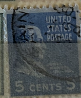
| SOURCE | TITLE| IMAGE MATCH | click to source page |
| eBay | United States Postage Stamp ~ James Monroe ~ 5₵ Blue ~ Posted ~ c.1938 - 28 | eBay | 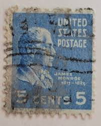 |
| HipStamp | 810 5 cent FANCY CANCEL James Monroe Stamp used VF | United States, General Issue Stamp / HipStamp | 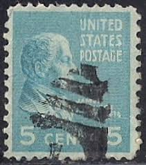 |
| Etsy | James Monroe 1938 5 Cents US Postage Stamp - Etsy | 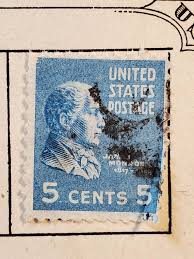 |
| HipStamp | 810 Used James Monroe | United States, General Issue Stamp / HipStamp | 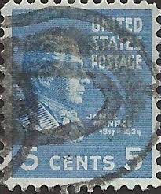 |
| eBay | 1938 US Postage Stamp-James Monroe | eBay | 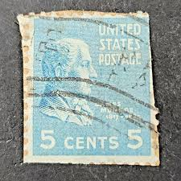 |
| Etsy | James Monroe 1938 5 Cents US Postage Stamp - Etsy New Zealand | 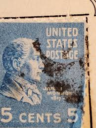 |
| eBay | New Jersey Precancel Used US Stamps (1901-Now) for sale | eBay | 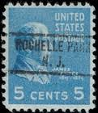 |
| Alamy | A vintage James Monroe postage stamp from the USA on a white background Stock Photo - Alamy | 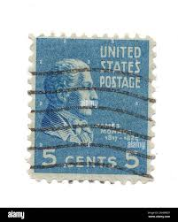 |
| iStock | United States Used Postage Stamp Showing President James Buchanan Stock Photo - Download Image Now - iStock | 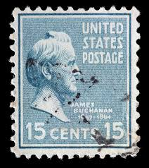 |
| Alamy | Us postage stamp james monroe hi-res stock photography and images - Alamy | 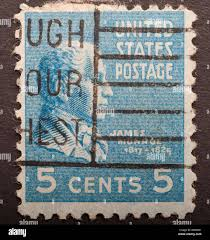 |
| Restoring a 1902 Victorian dining room and discovering historical items | 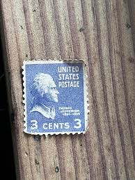 | |
| Alamy | James Monroe a portrait from old American money Stock Photo - Alamy | 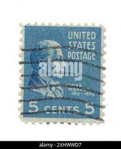 |
| Shutterstock | Usa Circa 1931 Stamp Printed United Stock Photo 133287167 | Shutterstock | 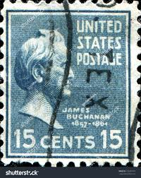 |
| Dreamstime.com | James Monroe 1758 - 1831, the Fifth President of the United States from 1817 To 1825 Editorial Image - Image of national, politics: 209672770 | 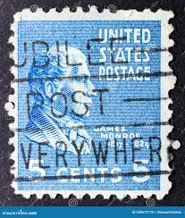 |
| Dreamstime.com | James Monroe (1758-1831), Fifth President of the U.S.a Editorial Stock Photo - Image of heritage, america: 119640643 | 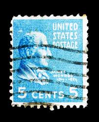 |
| eBay | JAMES MONROE 5 CENT STAMP U.S. POSTAGE STAMP | eBay | 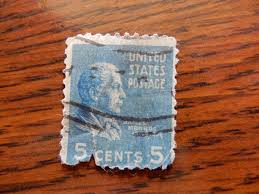 |
| eBay | 1950-1951 *THE ALASKA RAILROAD* ANCHORAGE AIR MAIL COVER+SC# C39, 810, 829! RARE | eBay | 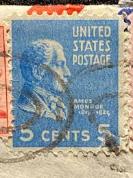 |
| Precancel Stamp Society | VERMONT PRECANCELS | 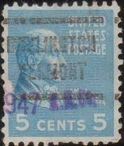 |
| Mercari | Stamps USA. Two cent and 5 Cents Stamps | Mercari | 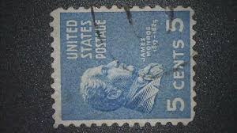 |
| eBay | 1938 Thomas Jefferson PURPLE 3 Cent Stamp RARE and COLLECTABLE !!!!!! | eBay | 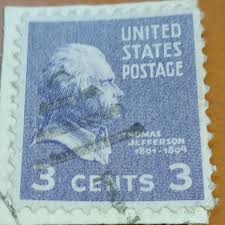 |
| eBay | US Stamp Sc# 819 Franklin Pierce 14c Used - #4975 | eBay | 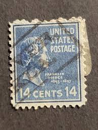 |
| Todocolección | united states 50 cents william howard ano 1938. - Buy Antique stamps of United States on todocoleccion | 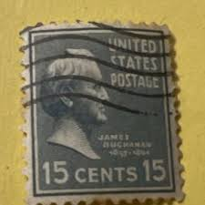 |
| eBay | 1938 Stamp #810 James Monroe Used | eBay | 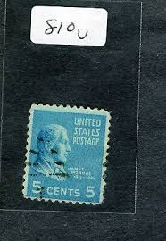 |
| eBay | US - 1938 - 5 Cents Bright Blue James Monroe Presidential Series # 810 | eBay | 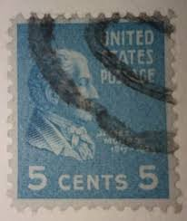 |
| eBay | 820 15c James Buchanan 1938 USPS Stamp (Two Stamp Lot) | eBay | 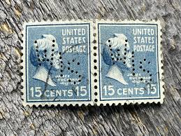 |
| eBay | 1938 Thomas Jefferson PURPLE 3 Cent Stamp RARE and COLLECTABLE !!!!!! | eBay | 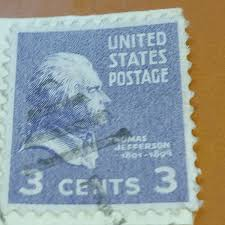 |
| eBay | 810 5 CENTS PRESIDENTIAL SERIES FANCY CANCEL USED c | eBay | 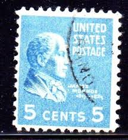 |
| eBay | U.S. Postage James Monroe 5₵ Blue Posted/Cancelled c.1938 | eBay | 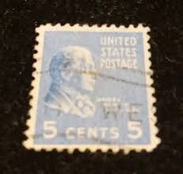 |
| eBay | Scott# 810 5c Monroe Used Stamp (a1) 1938-43 San Francisco CA | eBay | 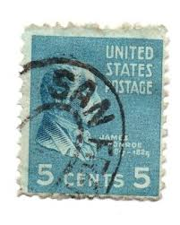 |
| eBay | United States Postage Stamp ~ James Monroe ~ 5₵ Blue ~ Posted ~ c.1938 - 28 | eBay | 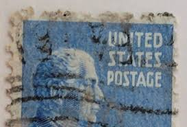 |
| HipStamp | Territories Precancels: Frederiksted VI 734 (IK); Better Type ($1) 5c Prexy #810 | United States, General Issue Stamp / HipStamp | 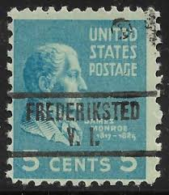 |
| eBay | USA - 1938 - Presidential Issue - James Monroe - 5C - #05 | eBay | 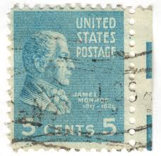 |
| Shutterstock | 3+ Hundred 7 Cent Stamp Royalty-Free Images, Stock Photos & Pictures | Shutterstock | 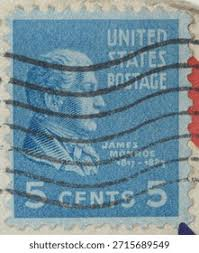 |
| eBay | Scott# 820 15c James Buchanan with fancy oval cancel ~ (A-7) | eBay | 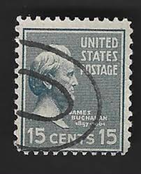 |
| eBay | Rare Thomas Jefferson 1801-1809 3 Cent Stamp Collectors Condition | eBay | 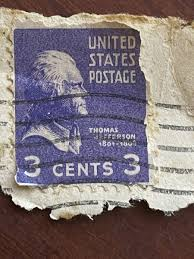 |
| HipStamp | 810 5 cent James Monroe Stamp used VF | United States, General Issue Stamp / HipStamp | 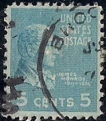 |
| eBay | 1938 James Buchanan- Presidential 15 cent Stamp Scott 820 Used | eBay | 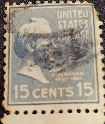 |
| Shutterstock | Karnal Haryana India -july 17th 2025-closeup Stock Photo 2697810627 | Shutterstock | 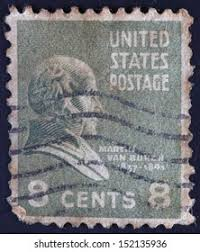 |
| Etsy | James Monroe 1938 5 Cents US postage stamp - Etsy Österreich | 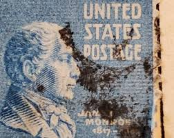 |
| eBay | United States Postage Stamp ~ James Monroe ~ 5₵ Blue ~ Posted ~ c.1938 - 03 | eBay | 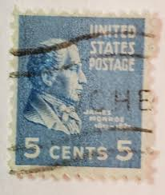 |
| eBay | STAMP US SCOTT 810 "Monroe" 5 CENT 1938 USED WITH PB # | eBay | 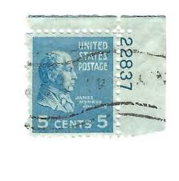 |
| eBay | United States Postage Stamp ~ James Monroe ~ 5₵ Blue ~ Posted ~ c.1938 - 09 | eBay | 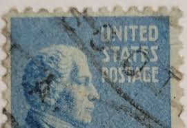 |
| eBay | 1938 5¢ James Monroe. Presidential Series. | eBay | 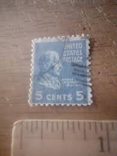 |
| eBay | 5 Cent Pennsylvania Used US Stamps (1901-Now) for sale | eBay | 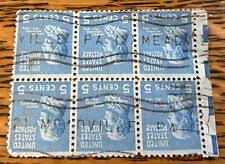 |
| eBay | United States Postage Stamp ~ James Monroe ~ 5₵ Blue ~ Posted ~ c.1938 - 35 | eBay | 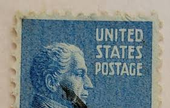 |
| eBay | United States Postage Stamp ~ James Monroe ~ 5₵ Blue ~ Posted ~ c.1938 - 29 | eBay | 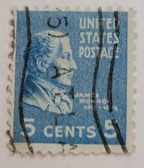 |
| eBay | 1939 3c Thomas Jefferson, Coil Scott 851 Mint F/VF NH | eBay | 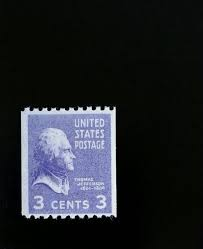 |
| Dreamstime.com | Postage Stamp United States 1951 Stock Photos - Free & Royalty-Free Stock Photos from Dreamstime | 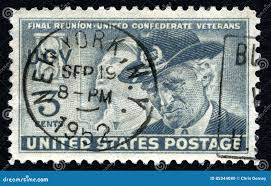 |
| eBay | 1 1/2 Cent Stamp Martha Washington for sale | eBay | 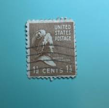 |
| eBay | United States Postage Stamp ~ James Monroe ~ 5₵ Blue ~ Posted ~ c.1938 - 20 | eBay | |
| PicClick | 1950 FINAL REUNION "United Confederate Veterans" First Day Issue Envelope! $6.29 - PicClick | |
| eBay | United States Postage Stamp ~ James Monroe ~ 5₵ Blue ~ Posted ~ c.1938 - 36 | eBay | |
| eBay | United States Postage Stamp ~ James Monroe ~ 5₵ Blue ~ 6 TOTAL. | eBay | |
| Osta | 1938 USA 2 kustutatud Scott 811 (232414264) - Osta.ee | |
| Dreamstime.com | Postage Stamp United States of America, USA 1951. Confederate Soldier and United Confederate Veteran Editorial Stock Image - Image of cent, mail: 228997969 | |
| eBay | James Monroe" 5 Cent Bright Blue US Postage Stamp Used Hung | eBay | |
| eBay | Scott# 807 US Stamp 1938 3c Thomas Jefferson Used Prexie Great Shape - #1452 | eBay | |
| 24th Infantry Division Association | e aro -ea | |
| eBay | United States Postage Stamp ~ James Monroe ~ 5₵ Blue ~ 6 TOTAL. | eBay | |
| HipStamp | 1770 Used Robert F. Kennedy | United States, General Issue Stamp / HipStamp |